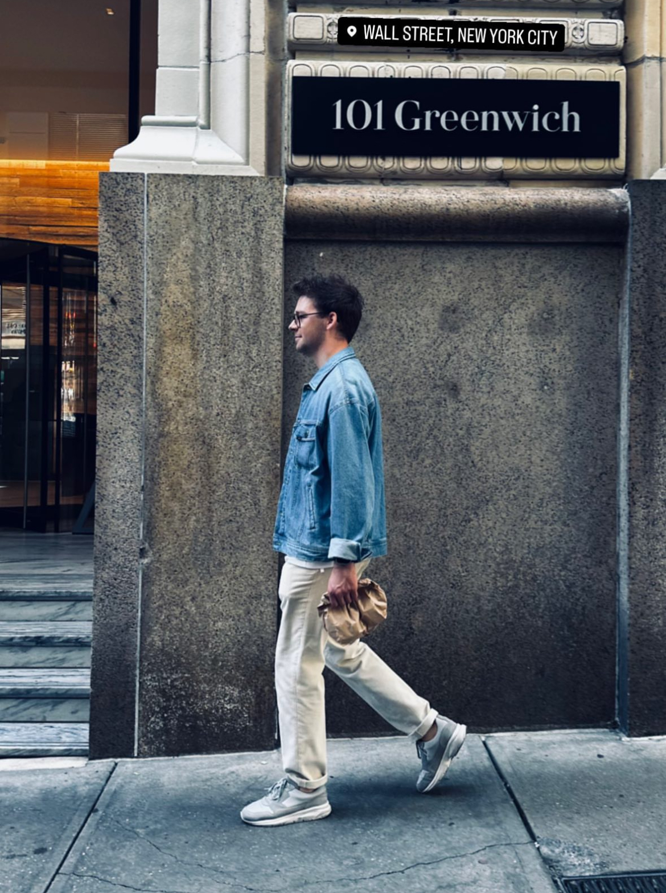

Recent Presentation at SOCO

I recently gave a talk at the SOCO breakfast seminar, where I shared insights on modern test strategies and automation in hardware-software integration. Check out the full presentation here.
Test developer with a passion for elegant solutions and real-world impact.

I recently gave a talk at the SOCO breakfast seminar, where I shared insights on modern test strategies and automation in hardware-software integration. Check out the full presentation here.

I worked on the TOMRA R2 reverse vending machine, which features a modular system and continuous feed, making recycling fast and efficient. The R2 is designed to optimize operations with easy maintenance and troubleshooting, and it supports sustainability with its innovative design.

Another project I contributed to is the TOMRA RollPac, designed for medium to large stores. It accepts cans, plastic bottles, and glass, and features a modular system with up to seven cabinets. The RollPac enhances efficiency and supports high-volume recycling.